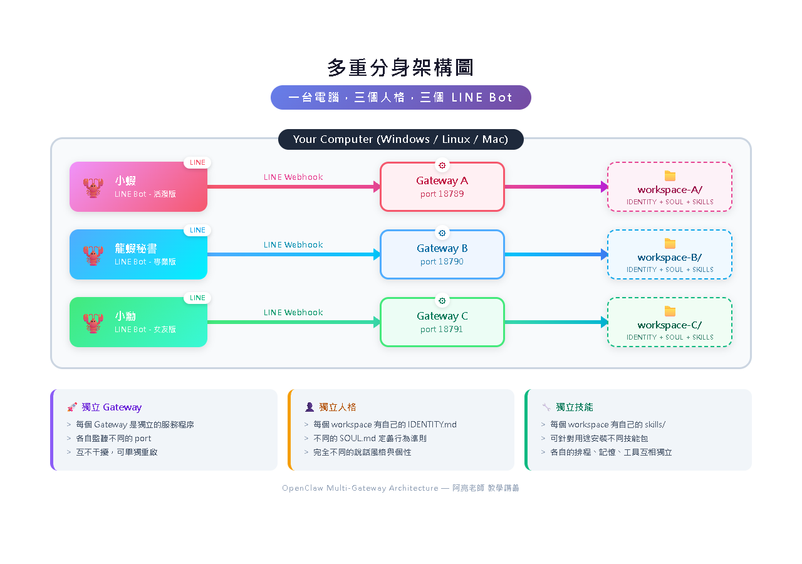
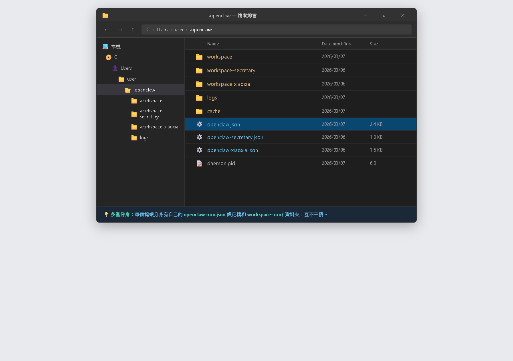
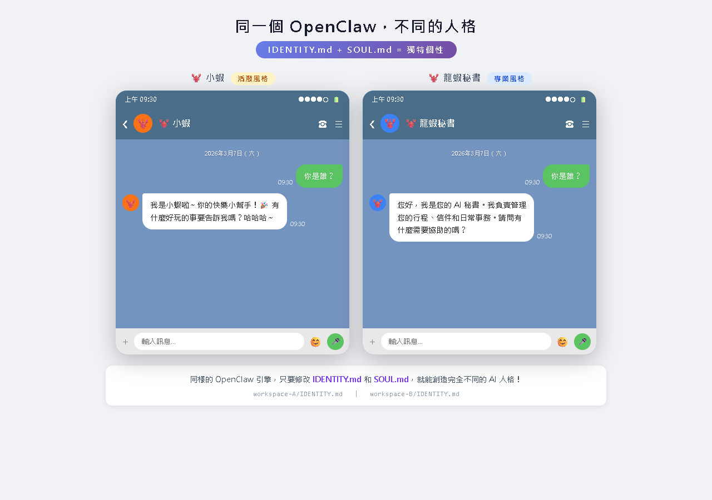

AI Agent 自主代理三王實戰
一隻龍蝦當工作秘書、一隻當學習夥伴、一隻當英文教師——多隻龍蝦各自有不同人設與專長，各司其職
到目前為止，不管是 LINE、Telegram 還是 Discord，背後都是同一隻龍蝦、同一個人設、同一套記憶。

LINE ──────┐
│
Telegram ──┼── 龍蝦（一個 Gateway、一套人設、一個 AI 大腦）
│
Discord ───┘
| 情境 | 問題 |
|---|---|
| 工作群組用龍蝦，語氣太輕鬆 | 一套人設無法同時正式又輕鬆 |
| 給家人用，不想讓他們看到工作記憶 | 一套記憶沒辦法分人顯示 |
| 想用不同 AI 模型處理不同的事 | 一隻龍蝦只能設一個模型 |
| 英文助手用英文、中文助手用中文 | 一份 IDENTITY.md 只能設一種語言 |
多重分身的概念很直覺：在電腦上跑多個 OpenClaw Gateway，每個 Gateway 有自己的設定。
LINE Bot A ─── Gateway A（port 18789）─── 工作秘書人設
AI: GPT-5.2
LINE Bot B ─── Gateway B（port 18790）─── 學習夥伴人設
AI: Gemini 3 Flash
Telegram ──── Gateway C（port 18791）─── 英文教師人設
AI: Claude Sonnet 4.6
不同的 openclaw.json
不同的 IDENTITY.md、SOUL.md
不同的 LINE Bot / Telegram Bot
可以用不同的模型
每個 Gateway 用不同的 port
以下指令都在 PowerShell / 終端機 輸入，不是在 LINE、瀏覽器或 Dashboard 裡做。
# 建立新的工作區資料夾
mkdir C:\Users\你的名稱\.openclaw\workspace-work
# 複製預設工作區的檔案當範本
Copy-Item C:\Users\你的名稱\.openclaw\workspace\* `
C:\Users\你的名稱\.openclaw\workspace-work\ -Recurse

C:\Users\你的名稱\.openclaw\workspace-work 資料夾，裡面至少有 IDENTITY.md、SOUL.md、USER.md。
# 複製一份設定檔
Copy-Item C:\Users\你的名稱\.openclaw\openclaw.json `
C:\Users\你的名稱\.openclaw\openclaw-work.json
接著用記事本打開第二份設定檔：
notepad C:\Users\你的名稱\.openclaw\openclaw-work.json
修改 openclaw-work.json 時，至少要改這幾個地方：
18790（不能跟第一隻一樣）workspace-work# 第一隻（預設） openclaw gateway start # 第二隻（指定設定檔） openclaw gateway start --config C:\Users\你的名稱\.openclaw\openclaw-work.json
兩隻龍蝦會分別在不同的埠號上運行。如果你用 Cloudflare Tunnel（CH12），需要為每隻龍蝦設定不同的子域名。
回到 LINE Developers Console 多建幾個 Messaging API Channel
每隻龍蝦有自己的一套設定檔（IDENTITY.md 等）
每個 Gateway 用不同的 port（18789、18790、18791...）
多隻龍蝦可以共用同一個 AI API Key，費用合併計算
每隻龍蝦有自己的工作區，所以它們的記憶是完全獨立的。你跟工作秘書龍蝦說的話，學習夥伴龍蝦不會知道。
用符號連結（symlink）讓多個工作區共享同一份 USER.md，讓龍蝦們都知道你是誰
讓多隻龍蝦共享長期記憶（要小心隱私問題）
最安全的做法，完全不共享，工作與生活分開
# 讓第二隻龍蝦的 USER.md 指向第一隻的
New-Item -ItemType SymbolicLink `
-Path "C:\Users\你的名稱\.openclaw\workspace-work\USER.md" `
-Target "C:\Users\你的名稱\.openclaw\workspace\USER.md" -Force
USER.md。
每個通道連到哪隻龍蝦，訊息就去哪。使用者感知不到背後有多隻龍蝦——他們只是在跟不同的 Bot 聊天。
6 / 10如果你只有一個 LINE Bot，但想在不同情境切換人設，可以用「模式切換」——在同一隻龍蝦裡切換不同的行為風格。
你：切換到工作模式 龍蝦：好的，我現在切換到工作秘書模式。有什麼需要幫忙的？
## 模式 ### 日常模式（預設） - 語氣輕鬆、像朋友聊天 - 可以開玩笑 ### 工作模式 - 語氣正式、有條理 - 回覆注重效率 ### 學習模式 - 有耐心、循序漸進 - 會出小測驗 當使用者說「切換到 XX 模式」，就切換到對應的風格。
C:\Users\你的名稱\.openclaw\workspace\IDENTITY.md，把多種模式寫進去。openclaw gateway restart，再去 LINE 實測：切換到工作模式切換到學習模式
輕鬆聊天、開玩笑
正式、有條理、高效率
耐心、循序漸進、出題
| 🦞 龍蝦 A：小蝦（生活助手） | 🦞 龍蝦 B：龍蝦秘書（工作助手） | |
|---|---|---|
| 通道 | LINE Bot A | LINE Bot B |
| 人設 | 輕鬆、幽默、愛聊天 | 專業、有條理、效率導向 |
| AI 模型 | Gemini 3 Flash（免費、快） | GPT-5.2（高品質） |
| 埠號 | 18789 | 18790 |
| 用途 | 查天氣、找餐廳、聊天 | 寫報告、整理資料、行程管理 |

workspace-work + 新設定檔 openclaw-work.jsoningress:
- hostname: bot.mylobster.xyz
service: http://localhost:18789
- hostname: work.mylobster.xyz
service: http://localhost:18790
- service: http_status:404
# DNS 路由設定 cloudflared tunnel route dns lobster work.mylobster.xyz # LINE Developers Console # 第二個 Bot 的 Webhook URL： # https://work.mylobster.xyz/line/webhook
bot.mylobster.xyz 指到 18789。work.mylobster.xyz，指到 18790。https://work.mylobster.xyz/line/webhook。
可以。API Key 跟 AI 服務商帳號綁定，不是跟龍蝦綁定。費用合併計算。
不行。一個 LINE Bot 只能連一個 Webhook URL。想用多隻就需要多個 Bot，或用「模式切換」。
是的。每隻龍蝦有自己的配對系統，兩邊都需要各自完成配對。
最簡單，適合大部分人。一隻龍蝦同時回覆 LINE、Telegram、Discord。
中等複雜度。在同一隻龍蝦裡切換不同風格——日常、工作、學習模式。
最靈活。完全獨立的設定、記憶和通道，適合進階用戶。
通道篇完結！你的龍蝦現在可以：
📖 下一章預告：CH15 60+ 技能——讓龍蝦無所不能
進入第五篇「技能篇」！OpenClaw 有一個強大的 Skills（技能）系統，可以讓龍蝦學會各種新本領——天氣查詢、Email 管理、日曆整合、AI 拍照......看看龍蝦還能變得多強！